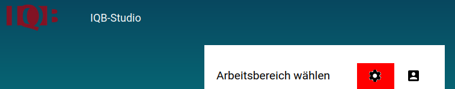
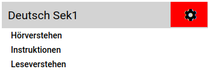

Zugriffsrechte
Diese Seite ist in Bearbeitung und wird demnächst fertig gestellt.
Zumeist wissen System-Administrator*innen nicht, welche Aufgaben für welche Studien gerade in Bearbeitung sind. Das ist auch nicht die Aufgabe von System-Administrator*innen, sondern Aufgabe der Verantwortlichen zur Aufgabenentwicklung. Letztere wissen genau, welche Personen zu ihrem Team gehören und welche Aufgaben für welche Studie bearbeitet oder entworfen werden sollen. Daher findet in der Anwendung eine Trennung zwischen System-Administrator*innen und den Verantwortlichen zur Aufgabenentwicklung statt.
System-Administrator*in
Bei der Installation des Studios werden System-Administrator*innen eingerichtet. Nach der Anmeldung als System-Administrator*in ist ein Schalter für die System-Einstellungen zu sehen. Dieser Schalter befindet sich im Kopf der Bereichsgruppenliste rechts oben und sieht aus wie ein Zahnrad.

Durch einen Klick auf den Schalter der Systemeinstellungen werden alle zur Verfügung stehenden Funktionen angezeigt. Die Funktionen sind auf mehrere Reiter verteilt. Die folgenden Reiter sind zu sehen:
- Nutzer:innen
- Bereichsgruppen
- Module
- Einstellungen
- Pakete
Nachfolgend wird auf die Funktionen hinter den Reitern näher eingegangen.
Reiter: Nutzer:innen
Hier werden die Zugänge für das Studio eingerichtet. Auf der linken Seite ist eine Liste aller Zugänge zu sehen. Durch Betätigung der Schaltfläche: PLus wird ein neuer Zugang eingerichtet. Es erscheint ein Formular zur Eingabe von Metadaten zum Zugang. Hier wird unter anderem ein Passwort festgelegt und eine Mailadresse hinterlegt. Es wird außerdem festgelegt, ob der Zugang als System-Administrator*in fungieren soll. Nach dem Speichern des Formulars ist der Zugang angelegt.
Zugänge die als System-Administrator*in angelegt wurde, werden in der Liste der Zugänge mit einem Sternchen gekennzeichnet.
Zugänge können mit der Schaltfläche: Mülleimer entfernt werden. Sollen Metadaten verändert werden, kann die Schaltfläche: Stift verwendet werden. Bspw. könnte hier die Mailadresse nachträglich geändert werden oder eine vorherige Festlegung als System-Administrator*in wieder rückgängig gemacht werden.
Soll ein Zugang entfernt oder Metadaten angepasst werden, ist der entsprechende Zugang zuvor zu markieren.
Ganz rechts ist die Liste aller Bereichsgruppen zu sehen. Ist ein Zugang markiert, kann dem Zugang eine Bereichsgruppe zugeordnet werden. Damit diese Änderungen nicht verloren gehen, muss mit der Schaltfläche: Diskette oben rechts gespeichert werden.
Wird einem Zugang eine Bereichsgruppe zugeordnet, besitzt dieser Zugang die Berechtigung auf die Bereichsgruppen-Einstellungen zuzugreifen. Dieser Zugang ist dann Bereichsgruppen-Administrator*in.
Reiter: Bereichsgruppen
Links ist eine Liste aller Bereichsgruppen zu sehen. Mithilfe der Schaltfläche: Plus kann eine neue Bereichsgruppe angelegt werde. Der Name der Bereichsgruppe sollte sich dabei günstigerweise an dem Zweck der Studie orientieren. Durch Markierung einer Bereichsgruppe kann eine Bereichsgruppe gelöscht werden oder umbenannt werden. Außerdem kann mit Hilfe der Schaltfläche: Zahnrad das Metadaten-Profil der Bereichsgruppe angepasst werden.
Es finden sich zwei weitere Schaltfläche. Diese können genutzt werden, um separate Dateien zur Übersicht der Module und der Arbeitsbereiche in den Bereichsgruppen zu generieren. Das verschafft System-Administrator*innen einen zusätzlichen Überblick über nicht mehr genutzte Arbeitsbereiche und Module. Auf diese Weise ist es möglich hin und wieder ältere Stände zu entfernen und somit die Datenlast für das Studio zu reduzieren.
Reiter: Module
Es ist eine Liste aller Module für Editor, Schemer und PLayer zu sehen. Mit der Schaltfläche: Wolke können neue Module geladen werden. Gelöscht können Module erst nachdem diese zuvor markiert wurden.
Reiter: Einstellungen
Hier können Texte zu Wartungsarbeiten auf der Anmeldeseite und die Texte im Impressum verändert werden. Außerdem kann das Layout der Anwendung angepasst werden.
Da das Studio die XML-Dateien zur Aufgaben-Definition, Studien- und Testheft-Definition ausgeben kann und vor der Ausgabe auch Konfigurationen an diesen Dateien vorgenommen werden können, muss das Studio wissen, nach welchen Vorgaben diese Dateien erstellt werden sollen. Die Vorgabe liefert die so genannte Schema-Definition. Diese ist wie eine Art Schablone und bestimmt, welche Elemente und Attribute in den XML-Dateien zulässig sind. Da die XML-Dateien zur Studiendurchführung in das Testcenter geladen werden, gibt das Testcenter die zu verwendende Schema-Definition vor. Mit jeder neuen Testcenter-Version kann sich auch die Schema-Definition ändern, weil bspw. erlaubte Elemente und Attribute für die XML-Dateien hinzugekommen sind. Aus diesem Grund kann in den Einstellungen festgelegt werden, welche Schema-Definition einer Testcenter-Version verwendet werden soll.
Reiter: Pakete
Hier können Pakete bswp. für GeoGebra geladen werden. Damit GeoGebra-Elemente in der Vorschau des Editors sichtbar sind, muss das entsprechende Paket vorhanden sein.
Bereichsgruppen-Administrator*in
Bereichsgruppen-Administrator*innen können nur die Funktionen innerhalb einer Bereichsgruppe nutzen. Nur System-Administrator*innen können Bereichsgruppen-Administrator*innen angelegen. Die Bereichsgruppen-Einstellungen sind über den Schalter: Zahnrad neben der jeweiligen Bereichsgruppe zu erreichen.

Nach Betätigung des Schalters ist eine Seite mit den folgenden Reitern zu sehen:
- Nutzer:innen
- Arbeitsbereiche
- Einstellungen
Nachfolgend wird auf die Funktionen hinter den Reitern näher eingegangen.
Reiter: Nutzer:innen
Links ist eine Liste aller Zugänge zum Studio zu sehen. Rechts ist eine Liste der Arbeitsbereiche zu sehen, die sich in dieser Bereichsgruppe befinden. Durch Markierung eines Zugangs, kann rechts festgelegt werden auf welchen Arbeitsbereich zugegriffen werden darf. Dabei stehen verschiedene Optionen zur Auswahl:
Kommentierer*in:
Diese Rolle ist gedacht für die Aufgabenkorrektur. Aufgaben können nicht direkt verändert werden. Es können aber Hinweise für die Aufgabenentwickler*innen zur Korrektur hinterlassen werden.
Entwickler*in:
Diese Rolle ist gedacht für Aufgabenentwickler*innen, die zum Aufgabenentwurf ausschließlich mit Assistenten arbeiten sollen. Assistenten generieren nur vorgefertigte Aufgabenelemente mit nicht änderbaren Parametern.
Admin:
In dieser Rolle können Aufgaben in vollem Umfang entworfen werden. Das heißt: Alle Parameter eines Aufgabenelementes sind zugänglich und können angepasst werden.
Nachfolgend eine Übersicht über die Berechtigungen in den verschiedenen Rollen:
| Funktionalität | |||
| Aufgaben anlegen | |||
| Aufgaben kopieren | |||
| Aufgaben verschieben | |||
| Aufgaben löschen | |||
| Aufgaben exportieren | |||
| Aufgaben importieren | |||
| Aufgabenfolgen anlegen | |||
| Aufgabenfolgen löschen | |||
| Aufgabengruppen verwalten | |||
| Kommentare schreiben | |||
| Berichte erstellen | |||
| Druckansichten erstellen |